1과목: 재료역학
1. 원형축(바깥지름 d)을 재질이 같은 속이 빈 원형축(바깥지름 d, 안지름 d/2)으로 교체하였을 경우 받을 수 있는 비틀림 모멘트는 몇 % 감소하는가?
2. 포아송의 비 0.3, 길이 3m인 원형단면의 막대에 축방향의 하중이 가해진다. 이 막대의 표면에 원주방향으로 부착된 스트레인 게이지가 –1.5 ×10-4 의 변형률을 나타낼 때, 이 막대의 길이 변화로 옳은 것은?
3. 안지름이 80mm, 바깥지름이 90mm 이고 길이가 3m인 좌굴 하중을 받는 파이프 압축 부재의 세장비는 얼마 정도인가?
4. 지름 30mm의 환봉 시험편에서 표점거리를 10mm로 하고 스트레인 게이지를 부착하여 신장을 측정한 결과 인장하중 25kN에서 신장 0.0418 mm가 측정되었다. 이때의 지름은 29.97mm 이었다. 이 재료의 포아송 비(ν)는?
5. 다음과 같은 단면에 대한 2차 모멘트 Iz는 약 몇 mm4 인가?
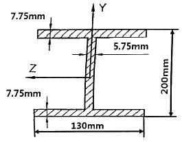
6. 지름 4cm, 길이 3m 인 선형 탄성 원형 축이 800rpm으로 3.6kW를 전달할 때 비틀림 각은 약 몇 도(°)인가? (단, 전단 탄성계수는 84 GPa 이다.)
7. 그림과 같이 한쪽 끝을 지지하고 다른 쪽을 고정한 보가 있다. 보의 단면은 직경 10cm의 원형이고 보의 길이는 L 이며, 보의 중앙에 2094N의 집중하중 P가 작용하고 있다. 이 때 보에 작용하는 최대굽힘응력이 8MPa 라고 한다면, 보의 길이 L은 약 몇 m 인가?
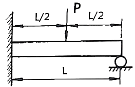
8. 다음과 같이 길이 L인 일단고정, 타단지지보에 등분포 하중 ω가 작용할 때, 고정단 A로부터 전단력이 0이 되는 거리(X)는 얼마인가?
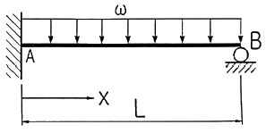
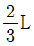
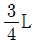
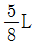
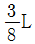
9. 두께 10mm의 강판에 지름 23mm의 구멍을 만드는데 필요한 하중은 약 몇 kN인가? (단, 강판의 전단응력 τ = 750 MPa 이다.)
10. 그림과 같은 구조물에서 점 A에 하중 P = 50 kN 이 작용하고 A점에서 오른편으로 F = 10 kN 이 작용할 때 평형위치의 변위 x는 몇 cm 인가? (단, 스프링탄성계수(k) = 5 kN/cm 이다.)
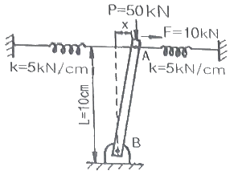
11. 직육면체가 일반적인 3축 응력 σx, σy, σz를 받고 있을 때 체적 변형률 εv는 대략 어떻게 표현되는가?
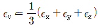
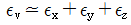
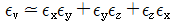
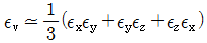
12. 다음 그림과 같이 C점에 집중하중 P가 작용하고 있는 외팔보의 자유단에서 경사각 θ를 구하는 식은? (단, 보의 굽힘 가성 EI는 일정하고, 자중은 무시한다.)
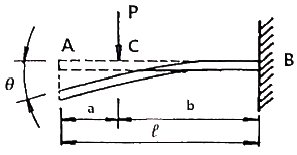
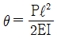
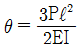
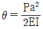
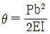
13. 단면적이 7cm2이고, 길이가 10m인 환봉의 온도를 10℃ 올렸더니 길이가 1mm 증가했다. 이 환봉의 열팽창계수는?
14. 단면 20cm × 30cm, 길이 6m의 목재로 된 단순보의 중앙에 20kN의 집중하중이 작용할 때, 최대 처짐은 약 몇 cm 인가? (단, 세로탄성계수 E = 10 GPa 이다.)
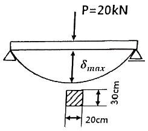
15. 끝이 닫혀있는 얇은 벽의 둥근 원통형 압력용기에 내압 p가 작용한다. 용기의 벽의 안쪽 표면 응력상태에서 일어나는 절대 최대 전단응력을 구하면? (단, 탱크의 반경 = r, 벽 두께 = t 이다.)
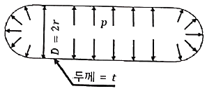
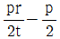
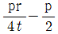
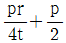
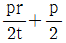
16. 길이 3m의 직사각형 단면 b × h = 5cm × 10cm을 가진 외팔보에 w의 균일분포하중이 작용하여 최대굽힘응력 500 N/cm2이 발생할 때, 최대전단응력은 약 몇 N/cm2 인가?
17. 그림에서 C점에서 작용하는 굽힘모멘트는 몇 N·m 인가?
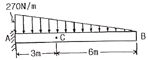
18. 그림과 같은 형태로 분포하중을 받고 있는 단순지지보가 있다. 지지점 A에서의 반력 RA는 얼마인가? (단, 분포하중
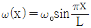
이다.)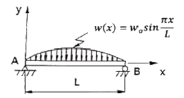
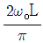
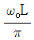
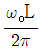
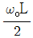
19. 그림과 같은 평면 응력 상태에서 최대 주응력은 약 몇 MPa 인가? (단, σx = 500 MPa, σy = -300 MPa, τxy = -300 MPa 이다.)
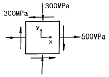
20. 강재 중공축이 25 kN·m의 토크를 전달한다. 중공축의 길이가 3m이고, 이 때 축에 발생하는 최대전단응력이 90 MPa 이며, 축에 발생된 비틀림각이 2.5° 라고 할 때 축의 외경과 내경을 구하면 각각 약 몇 mm 인가? (단, 축 재료의 전단탄성계수는 85 GPa 이다.)
2과목: 기계열역학
21. 어떤 사이클이 다음 온도(T)-엔트로피(s) 선도와 같을 때 작동 유체에 주어진 열량은 약 몇 kJ/kg 인가?
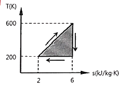
22. 압력이 100 kPa 이며 온도가 25℃인 방의 크기가 240 m3 이다. 이 방에 들어있는 공기의 질량은 약 몇 kg 인가? (단, 공기는 이상기체로 가정하며, 공기의 기체상수는 0.287 kJ/(kg·K) 이다.)
23. 용기에 부착된 압력계에 읽힌 계기압력이 150 kPa 이고 국소대기압이 100 kPa 일 때 용기 안의 절대압력은?
24. 수증기가 정상과정으로 40 m/s 의 속도로 누즐에 유입되어 275 m/s 로 빠져나간다. 유입되는 수증기의 엔탈피는 3300kJ/kg, 노즐로부터 발생되는 열손실은 5.9 kJ/kg 일 때 노즐 출구에서의 수증기 엔탈피는 약 몇 kJ/kg 인가?
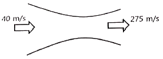
25. 클라우지우스(Clausius) 부등식을 옳게 표현한 것은? (단, T는 절대 온도, Q는 시스템으로 공급된 전체 열량을 표시한다.)
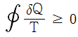
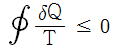
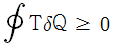
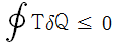
26. 500W 의 전열기로 4kg의 물을 20℃에서 90℃까지 가열하는데 몇 분이 소요되는가? (단, 전열기에서 열은 전부 온도 상승에 사용되고 물의 비열은 4180 J/(kg·K) 이다.)
27. R-12를 작동 유체로 사용하는 이상적인 증가압축 냉동 사이클이 있다. 여기서 증발기 출구 엔탈피는 229 kJ/kg, 팽창밸브 출구 엔탈피는 81 kJ/kg, 응축기 입구 엔탈피는 255 kJ/kg 일 때 이 냉동기의 성적계수는 약 얼마인가?
28. 보일러에 물(온도 20℃, 엔탈피 84 kJ/kg)이 유입되어 600 kPa 의 포화증기(온도 159℃, 엔탈피 2757 kJ/kg) 상태로 유출된다. 물의 질량유량이 300kg/h 이라면 보일러에 공급된 열량은 약 몇 kW인가?
29. 가역 과정으로 실린더 안의 공기를 50 kPa, 10℃ 상태에서 300 kPa 까지 압력(P)과 체적(V)의 관계가 다음과 같은 과정으로 압축할 때 단위 질량당 방출되는 열량은 약 몇 kJ/kg 인가? (단, 기체 상수는 0.287 kJ/(kg·K) 이고, 정적비열은 0.7 kJ/(kg·K) 이다.)
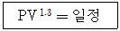
30. 효율이 40%인 열기관에서 유효하게 발생되는 동력이 110 kW 이라면 주위로 방출되는 총 열량은 약 몇 kW 인가?
31. 화씨 온도가 86°F 일 때 섭씨 온도는 몇 ℃ 인가?
32. 압력이 0.2 MPa 이고, 초기 온도가 120℃인 1kg의 공기를 압축비 18로 가역 단열 압축하는 경우 최종온도는 약 몇 ℃ 인가? (단, 공기는 비열비가 1.4 인 이상기체이다.)
33. 그림과 같이 실린더 내의 공기가 상태 1에서 상태 2로 변화할 때 공기가 한 일은? (단, P는 압력, V는 부피를 나타낸다.)
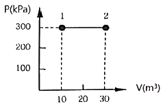
34. 등엔트로피 효율이 80%인 소형 공기터빈의 출력이 270 kJ/kg 이다. 입구 온도는 600K 이며, 출구 압력은 100 kPa 이다. 공기의 정압비열은 1.004 kJ/(kg·K), 비열비는 1.4 일 때, 입구 압력(kPa)은 약 몇 kPa 인가? (단, 공기는 이상기체로 간주한다.)
35. 100℃와 50℃ 사이에서 작동하는 냉동기로 가능한 최대성능계수(COP)는 약 얼마인가?
36. 카르노 사이클로 작동되는 열기관이 고온체에서 100 kJ의 열을 받고 있다. 이 기관의 열효율이 30% 라면 방출되는 열량은 약 몇 kJ 인가?
37. Van der Waals 상태 방정식은 다음과 같이 나타낸다. 이 식에서
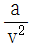
, b는 각각 무엇을 의미하는 것인가? (단, P는 압력, v는 비체적, R는 기체상수, T는 온도를 나타낸다.)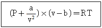
38. 어떤 시스템에서 유체는 외부로부터 19 kJ의 일을 받으면서 167 kJ의 열을 흡수하였다. 이 때 내부에너지의 변화는 어떻게 되는가?
39. 체적이 500cm3 인 풍선에 압력 0.1 MPa, 온도 288K의 공기가 가득 채워져 있다. 압력이 일정한 상태에서 풍선 속 공기 온도가 300K로 상승했을 때 공기에 가해진 열량은 약 얼마인가? (단, 공기의 정압비열이 1.0⑤ kJ/(kg·K), 기체상수가 0.287 kJ/(kg·K) 인 이상기체로 간주한다.)
40. 어떤 시스템에서 공기가 초기에 290K 에서 330K로 변화하였고, 이 때 압력은 200 kPa에서 600 kPa 로 변화하였다. 이 때 단위 질량당 엔트로피 변화는 약 몇 kJ/(kg·K) 인가? (단, 공기는 정압비열이 1.006 kJ/(kg·K)이고, 기체상수가 0.287 kJ/(kg·K)인 이 상기체로 간주한다.)
3과목: 기계유체역학
41. 분수에서 분출되는 물줄기 높이를 2배로 올리려면 노즐 입구에서의 게이지 압력을 약 몇 배로 올려야 하는가? (단, 노즐 입구에서의 동압은 무시한다.)
42. 수면의 높이 차이가 10m인 두 개의 호수사이에 손실수두가 2m인 관로를 통해 펌프로 물을 양수할 때 3kW 의 동력이 필요하다면 이 때 유량은 약 몇 L/s 인가?
43. 체적탄성계수가 2×109 N/m2 인 유체를 2% 압축하는데 필요한 압력은?
44. 정지된 액체 속에 잠겨있는 평면이 받는 압력에 의해 발생하는 합력에 대한 설명으로 옳은 것은?
45. 경사가 30°인 수로에 물이 흐르고 있다. 유속이 12 m/s 로 흐림이 균일하다고 가정하며 연직방향으로 측정한 수심이 60cm 이다. 수로의 폭을 1m로 한다면 유량은 약 몇 m3/s 인가?
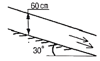
46. 일반적으로 뉴턴 유체의 온도 상승에 따른 액체의 점성계수 변화에 대한 설명으로 옳은 것은?
47. 경계층 밖에서 퍼텐셜 흐름의 속도가 10 m/s 일 때, 경계층의 두께는 속도가 얼마일 때의 값으로 잡아야 하는가? (단, 일반적으로 정의하는 경계층 두께를 기준으로 삼는다.)
48. 점성계수(μ)가 0.0⑤ Pa·s 인 유체가 수평으로 놓인 안지름이 4cm인 곧은 관을 30 cm/s의 평균속도로 흘러가고 있다. 흐름 상태가 층류일 때 수평 길이 800 cm 사이에서의 압력강하(Pa)는?
49. 다음 중 유선(stream line)을 가장 올바르게 설명한 것은?
50. 평행한 평판 사이의 층류 흐름을 해석하기 위해서 필요한 무차원수와 그 의미를 바르게 나타낸 것은?
51. 물의 지름이 0.4 m 인 노즐을 통해 20 m/s 의 속도로 맞은편 수직벽에 수평으로 분사된다. 수직벽에는 지름 0.2 m 의 구멍이 있으며 뚤린 구멍으로 유량의 25%가 흘러나가고 나머지 75%는 반경 방향으로 균일하게 유출된다. 이때 물에 의해 벽면이 받는 수평 방향의 힘은 약 몇 kN 인가?
52. 동점성계수가 1.5×10-5 m2/s 인 공기 중에서 30 m/s의 속도로 비행하는 비행기의 모형을 만들어, 동점성계수가 1.0×10-6 m2/s 인 물속에서 6m/s의 속도로 모형시험을 하려 한다. 모형(Lm)과 실형(Lp)의 길이비(Lm/Lp)를 얼마로 해야 되는가?
53. 관속에 흐르는 물의 유속을 측정하기 위하여 삽입한 피토 정압관에 비중이 3인 액체를 사용하는 마노미터를 연결하여 측정한 결과 액주의 높이 차이가 10cm로 나타났다면 유속은 약 몇 m/s 인가?
54. 바닷물 밀도는 수면에서 1025 kg/m3 이고 깊이 100m 마다 0.5 kg/m3 씩 증가한다. 깊이 1000m에서 압력은 계기압력으로 약 몇 kPa 인가?
55. 높이가 0.7m, 폭이 1.8m인 직사각형 덕트에 유체가 가득차서 흐른다. 이때 수력직경은 약 몇 m인가?
56. 동점성계수가 1.5×10-5 m2/s 인 유체가 안지름이 10cm인 관 속을 흐르고 있을 때 층류 임계속도(cm/s)는? (단, 층류 임계레이놀즈수는 2100 이다.)(오류 신고가 접수된 문제입니다. 반드시 정답과 해설을 확인하시기 바랍니다.)
57. 다음 중 유체의 속도구배와 전단응력이 선형적으로 비례하는 유체를 설명한 가장 알맞은 용어는 무엇인가?
58. 속도 포텐셜이 ø = x2 - y2인 2차원 유동에 해당하는 유동함수로 가장 옳은 것은?
59. 물을 담은 그릇을 수평방향으로 4.2 m/s2으로 운동시킬 때 물은 수평에 대하여 약 몇 도(°) 기울어지겠는가?
60. 몸무게가 750N인 조종사가 지름 5.5m의 낙하산을 타고 비행기에서 탈출하였다. 항력계수가 1.0이고, 낙하산의 무게를 무시한다면 조종사의 최대 종속도는 약 몇 m/s가 되는가? (단, 공기의 밀도는 1.2 kg/m3 이다.)
4과목: 기계재료 및 유압기기
61. 다음 중 비중이 가장 작고, 항공기 부품이나 전자 및 전기용 제품의 케이스 용도로 사용되고 있는 합금 재료는?
62. 다음의 조직 중 경도가 가장 높은 것은?
63. 강의 열처리 방법 중 표면경화법에 해당하는 것은?
64. 칼로라이징은 어떤 원소를 금속표면에 확산 침투시키는 방법인가?
65. Fe-C 평형상태도에서 온도가 가장 낮은 것은?
66. 열경화성 수지에 해당하는 것은?
67. 다음 중 반발을 이용하여 경도를 측정하는 시험법은?
68. 구리(Cu)합금에 대한 설명 중 옳은 것은?
69. 면심입방격자(FCC)의 단위격자 내에 원자수는 몇 개인가?
70. 합금주철에서 특수합금 원소의 영향을 설명한 것 중 틀린 것은?
71. 그림과 같은 유압 기호가 나타내는 명칭은?
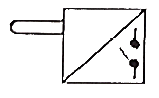
72. 부하의 하중에 의한 자유낙하를 방지하기 위해 배압(back pressure)을 부여하는 밸브는?
73. 어큐물레이터(accumulator)의 역할에 해당하지 않는 것은?
74. 유압실린더에서 피스톤 로드가 부하를 미튼 힘이 50 kN, 피스톤 속도가 5 m/min 인 경우 실린더 내경이 8cm 이라면 소요동력은 약 몇 kW 인가? (단, 펀로드형 실린더이다.)
75. 액추에이터의 공급 쪽 관로에 설정된 바이패스 관로의 흐름을 제어함으로써 속도를 제어하는 회로는?
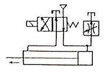
76. 유압 작동유에서 요구되는 특성이 아닌 것은?
77. 유압 시스템의 배관계통과 시스템 구성에 사용되는 유압기기의 이물질을 제거하는 작업으로 유랫동안 사용하지 않던 설비의 운전을 다시 시작하였을 때나 유압 기계를 처음 설치하였을 때 수행하는 작업은?
78. 유동하고 있는 액체의 압력이 국부적으로 저하되어, 증기나 함유 기체를 포함하는 기포가 발생하는 현상은?
79. 다음 기어펌프에서 발생하는 폐입 현상을 방지하기 위한 방법으로 가장 적절한 것은?
80. 다음 중 오일의 점성을 이용하여 진동을 흡수하거나 충격을 완화 시킬 수 있는 유압응용장치는?
5과목: 기계제작법 및 기계동력학
81. 20 m/s의 같은 속력으로 달리던 자동차 A, B가 교차로에서 직각으로 충돌하였다. 충돌 직후 자동차 A의 속력은 약 몇 m/s인가? (단, 자동차 A, B의 질량은 동일하며 반발계수는 0.7, 마찰은 무시한다.)
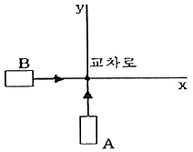
82. 80 rad/s로 회전하던 세탁기의 전원을 끈 후 20초가 경과하여 정지하였다면 세탁기가 정지할 때까지 약 몇 바퀴를 회전하였는가?
83. 시간 t에 따른 변위 x(t)가 다음과 같은 관계식을 가질 때 가속도 a(t)에 대한 식으로 옳은 것은?
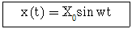
84. 체중이 600N인 사람이 타고 있는 무게 5000N의 엘리베이터가 200m의 케이블에 매달려 있다. 이 케이블을 모두 감아올리는데 필요한 일은 몇 kJ 인가?
85.
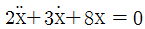
으로 주어진 진동계에서 대수 감소율(lograrithmic decrement)은?86. 다음 그림은 물체 운동의 v-t 선도(속도-시간선도)이다. 그래프에서 시간 t1에서의 접선의 기울기는 무엇을 나타내는가?
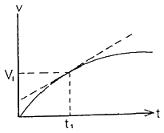
87. 달 표면에서 중력 가속도는 지구 표면에서의 1/6 이다. 지구 표면에서 주기가 T인 단전자를 달로 가져가면, 그 주기는 어떻게 변하는가?
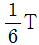
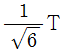
88. 감쇠비 ζ가 일정할 때 전달률을 1보다 작게 하려면 진동수비는 얼마의 크기를 가지고 있어야 하는가?
89. y축 방향으로 움직이는 질량 m인 질점이 그림과 같은 위치에서 v의 속도를 갖고 있다. O점에 대한 각운동량은 얼마인가? (단, a, b, c는 원점에서 질점까지의 x, y, z방향의 거리이다.)
90. 질량 50kg의 상자가 넘어기자 않도록 하면서 질량 10kg의 수레에 가할 수 있는 힘 P의 최댓값은 얼마인가? (단, 상자는 수레 위에서 미끄러지지 않는다고 가정한다.)
91. 레이저(laser) 가공에 대한 특징으로 틀린 것은?
92. 다음 표는 고속도강의 함유량 표기에서 “18”의 의미는?
93. 피복 아크 용접에서 피복제의 역할로 틀린 것은?
94. 절삭가공을 할 때 절삭온도를 측정하는 방법으로 사용하지 않는 것은?
95. 선반가공에서 직경 60 mm 길이 100 mm의 탄소강 재료 환봉을 초경바이트를 사용하여 1회 절삭 시 가공시간은 약 몇 초인가? (단, 절삭깊이 1.5 mm, 절삭속도 150 m/min, 이송은 0.2 mm/rev 이다.)
96. 300mm×500mm 인 주철 주물을 만들 때, 필요한 주입 추의 무게는 약 몇 kg 인가? (단, 쇳물 아궁이 높이가 120mm, 주물 미도는 7200 kg/m3 이다.)
97. 프레스 작업에서 전단가공이 아닌 것은?
98. 다음 중 직접 측정기가 아닌 것은?
99. 스프링 백(spring back)에 대한 설명으로 틀린 것은?
100. 내접기어 및 자동차의 3단 기어와 같은 단이 있는 기어를 깎을 수 있는 원통형 기어 절삭기계로 옳은 것은?